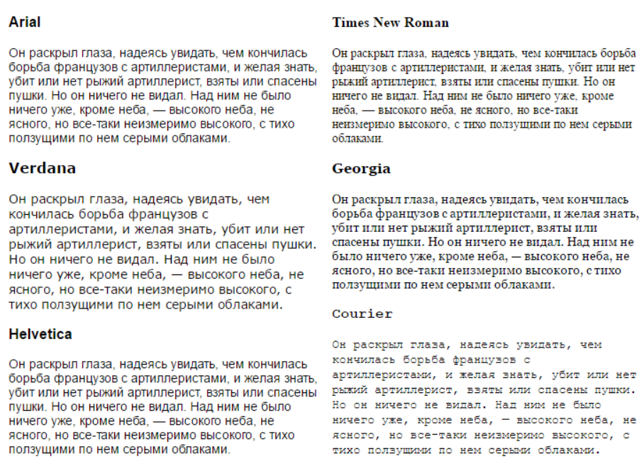

Стилизация шрифтов
Семейство шрифтов
Свойство font-family устанавливает семейство шрифтов, которое будет использоваться. Например:
body{
font-family: Arial;
}
В данном случае устанавливается шрифт Arial.
Шрифт свойства font-family будет работать, только если у пользователя на локальном компьютере имеется такой же шрифт. По этой причине нередко выбираются стандартные шрифты, которые широко распространены, как Arial, Verdana и т.д.
Также нередко применяется практика нескольких шрифтов:
body{
font-family: Arial, Verdana, Helvetica;
}
В данном случае основным шрифтом является первый - Arial. Если он на компьютере пользователя не поддерживается, то выбирается второй и т.д.
Если название шрифта состоит из нескольких слов, например, Times New Roman, то все название заключается в кавычки:
body{
font-family: "Times New Roman";
}
Кроме конкретных стилей также могут использоваться общие универсальные шрифты, задаваемые с помощью значений sans-serif и serif:
body{
font-family: Arial, Verdana, sans-serif;
}
Так, если ни Arial, ни Verdana не поддерживаются на компьютере пользователя, то используется sans-serif - универсальный шрифт без засечек.
Типы шрифтов
Шрифты с засечками
Шрифты с засечками названы так, потому что на на концах основных штрихов имеют небольшие засечки. Считается, что они подходят для больших кусков текста, так как визуально связывают одну букву с другой, делая текст более читабельным.
Распространенные шрифты с засечками: Times, Times New Roman, Georgia, Garamond. Универсальный обобщенный шрифт с засечками представляет значение serif.
Шрифты без засечек
В отличие от шрифтов с засечками шрифты из этой группы не имеют засечек. Наиболее распространенные шрифты этой группы: Arial, Helvetica, Verdana.
Моноширинные шрифты
Моноширинный шрифт преимущественно применяется для отображения программного кода и не предназначен для вывода стандартного текста статей. Свое название эти шрифты получили от того, что каждая буква в таком шрифте имеет одинаковую ширину. Примеры подобных шрифтов: Courier, Courier New, Consolas, Lucida Console.
Примеры шрифтов:
Толщина шрифта
Свойство font-weight задает толщину шрифта. Оно может принимать 9 числовых значений: 100, 200, 300, 400,...900. 100 - очень тонкий шрифт, 900 - очень плотный шрифт
В реальности чаще для этого свойства используют два значения: normal (нежирный обычный текст) и bold (полужирный шрифт):
font-weight: normal;
font-weight: bold;
Курсив
Свойство font-style позволяет выделить текст курсивом. Для этого используется значение italic:
p {font-style: italic;}
Если надо отменить курсив, то применяется значение normal:
p {font-style: normal;}
Цвет шрифта
Свойство color устанавливает цвет шрифта:
p {
color: red;
}